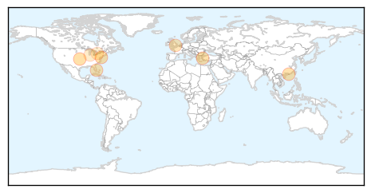

30 Day Trends
Web: 0 alerts, 0 warnings
Twitter: 1 alerts, 0 warnings
Top Articles:
- 0.995
- Influenza-like illness plagues Brockport campus
- 0.985
- 2 people die from influenza in Delaware
- 0.971
- Pregnant mother dies from flu, child saved
- 0.967
- Hong Kong learns of two new human cases of avian flu in China
- 0.916
- Holland America cruise ship sets sail after CDC probes for norovirus outbreak
- 0.809
- MMR vaccine linked to lower rate of infection-related hospital admissions
- 0.626
- Fox 28: South Bend, Elkhart IN News, Weather, Sports
- 0.555
- Study finds low rate of adverse events related to vaccinations in Ontario
Top Tweets:
-
No tweets found for Feb 25, 2014
Web/News Articles

Tweets

Article Locations
Article Confidences